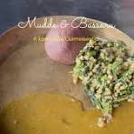

Ragi mudde (also known as ragi ball or ragi sangati) is a traditional, highly nutritious South Indian dish made from finger millet (ragi) flour and water. It is a legendary staple food across rural and urban Karnataka, as well as parts of Andhra Pradesh and Tamil Nadu, celebrated for giving long-lasting energy